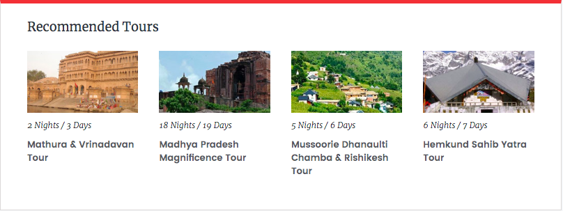

PILGRIMAGE
Last Updated: July 19, 2019 Anil Rana
Custodians of beliefs of more than a billion people: the holy places of India cross the boundaries of time to sanctify the lives around them.
If I were asked under what sky the human mind has most fully developed some of its choicest gifts, has most deeply pondered on the greatest problems of life, and has found solutions, I should point to India” – Max Mueller, German scholar
India has been praised by some of the great people who have lived on the Earth. The evidence of Indian civilization can be traced back to thousands of years. No other place can vouch for the sort of diversity, which fills every nook and cranny of this incredible country. The various religions, languages, dialects, traditions and customs provide many facets of the majestic country called India.
The geographic land of India has several marks of faith spread all across its length and breadth. Certain structures have several centuries of devotion backing them, granting more authenticity and reverence.
“India has two million gods, and worships them all. In religion all other countries are paupers; India is the only millionaire.” – Mark Twain (American author)
Indian religions, especially Hindu faith, offer numerous Gods and Goddesses to seek blessings from.
Situated close to the Alaknanda River, the abode of Lord Badrinath is located in the Chamoli district, a small town of Badrinath (Uttarakhand). This holy shrine of Lord Vishnu forms a part of the four holiest sites (Char Dhams) in Hindu religion. It is also one of the four Chota Char Dham pilgrimage sites (comparatively minor pilgrimage sites). It is one of the 108 temples dedicated to Lord Vishnu (Divya Desams), which find mention in the works of Tamil saints who existed from 6th to 9th century.
The ancient abode of Lord Vishnu can be visited only between April to November as in the rest of the months the weather is too harsh for undertaking a pilgrimage journey. Two of the famous festivals related to the temple are –
Mata Murti-Ka-Mela – in which the mother of Lord Badrinath is worshipped and it takes place in the month of September.
Badri-Kedar Festival – extending to 8 days, it takes place in the month of June and is celebrated in both the temples of Badrinath and Kedarnath.
The Sun temple is situated in the small town of Konark, which is situated in the Puri district of Odisha. This marvel of architecture is dedicated to Lord Sun. And resembling his carriage, the temple has been built in the shape of a chariot, which has twelve wheels and is shown as being dragged by the seven horses.
The temple is believed to be constructed in the 13th century by a king called Narasimhadeva. Like with most things in India, this temple too has connections with a few legends. As per one of the legends, God Krishna cursed, one of his own sons with leprosy. To seek penance, Samba worshiped Lord Sun (Surya) for a period of twelve years. Pleased with his devotion, Surya healed him. Samba made the Sun temple in return to express his gratitude.
The mesmerizing beauty of the place was best summed up by the Rabindranath Tagore through these words: ‘Here the language of stone surpasses the language of man.’
Also known as Peruvudaiyar Kovil and RajaRajeswaram, this 11th century temple was built by the Chola emperor Raja Raja Chola I. Dedicated to Lord Shiva, Brihadeeswara temple is the largest temple in India that is situated at Thanjavur city of Tamil Nadu.
Cholas are known for their majestic and splendid scale of structures. The opulence and artistic proficiency of Cholas is well reflected in the grand and magnificent architecture of the temple. Made entirely of granite stone, it was built as per the principles of Vaastu Shastras and Agamas.
The most remarkable thing related to the architecture of this UNESCO World Heritage Site is that it doesn’t leave any shadow on the ground at the noon time. The millenary celebrations of its construction took place in 2010 amid many enthusiastic and grand cultural events.